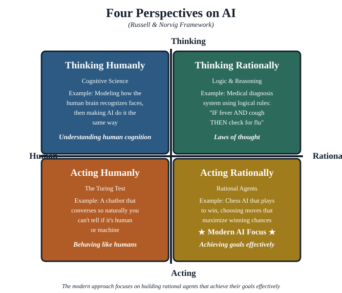
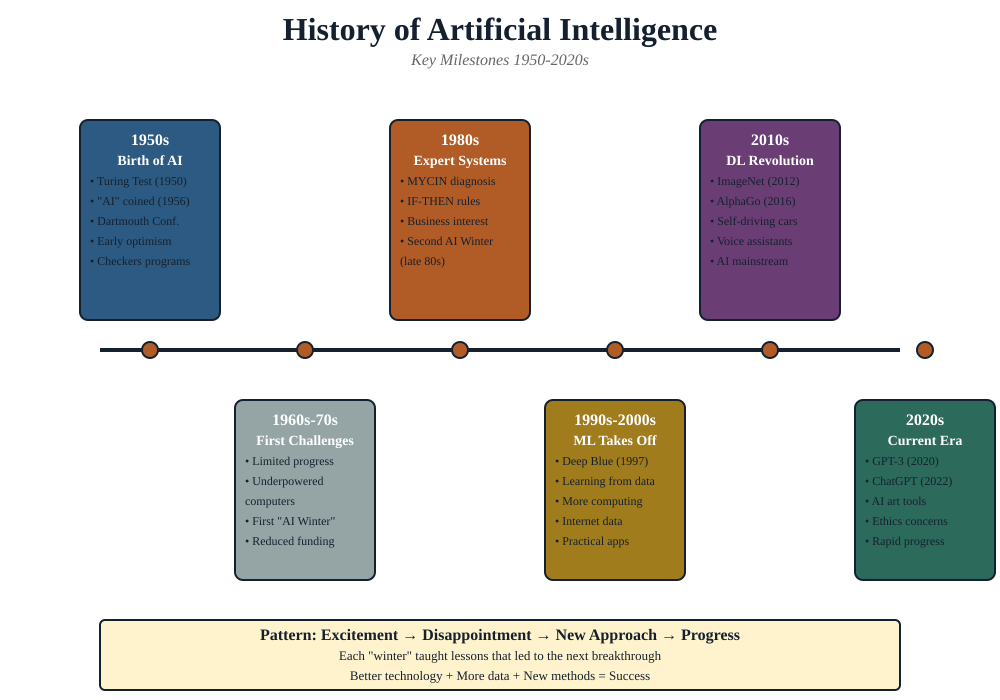

What we'll cover
- Welcome & the volume problem — why a forensics course needs AI at all
- Three words, three jobs — the Venn, plus warm-up Activity 1
- Data science — the field that studies data; the working cycle
- AI as a toolbox — a short history, and the six tool families
- Digital forensics — evidence-grade data & evidence types (Activity 2)
- How the three fit — the one-seized-phone worked example
- Recap & bridge to Part 2
Three words, three jobs
It is tempting to treat "AI", "data science" and "digital forensics" as interchangeable buzzwords. They are not. Each names a different job. Keeping them separate is what lets you say clearly what you are analysing, with which technique, and to what end. Get the words straight now and every later part becomes easier; blur them and you will keep mistaking a tool for a goal.
Activity 1 — Name the job (in pairs)
Here are five statements. For each, decide whether it is mainly a data science, AI, or digital forensics task — and say why in one sentence:
- "Is this dataset complete, or are timestamps missing for the night of the incident?"
- "Rank these 40,000 photos so the analyst sees the most likely matches first."
- "Hash the disk image so we can prove it wasn't altered after seizure."
- "Cluster these chat messages into topics without labelling them first."
- "What can we honestly conclude from a sample of only 12 records?"
Expect disagreement on a couple of them — that is the point. Many real tasks sit in the overlap.
Data science: the field that studies data
Data science is the discipline concerned with extracting reliable knowledge from data. It asks where data comes from, how it is structured, how clean and complete it is, and what can honestly be concluded from it. Crucially, data science is not a single algorithm — it is a way of working. The cycle, in five moves:
- Frame the question precisely enough that an answer would be recognisable.
- Gather the data that actually bears on it — and note what is missing.
- Examine & clean: check ranges, duplicates, gaps, and obvious errors.
- Model or summarise: count, compare, correlate, or fit a model.
- Communicate the finding with its uncertainty attached.
For a forensic investigator, the data-science mindset is already familiar under another name. "Where did this come from? Is it complete? Could it have been altered? What can I responsibly conclude?" are exactly the questions data science formalises. The difference is vocabulary, not instinct.
The single most common failure in practice is skipping straight from "gather" to "model" — running a clever analysis on data nobody examined. A timestamp column silently recorded in the wrong time zone, a log that rotated and lost a day, a deduplication that quietly merged two suspects: each produces a confident, wrong answer. Throughout the course the data-science questions sit underneath everything, because a clever AI result on untrustworthy data is worse than no result — it is persuasive and wrong.
Discuss
Where does "data science" end and "AI" begin? Is computing an average AI? Is ranking 40,000 photos by similarity AI? Push on the boundary — you will find it is fuzzy, and that the useful distinction is job (study the data) versus tool (an algorithm that handles it).
AI: the algorithms that handle data
Artificial intelligence is the family of algorithms and approaches that let a machine perform tasks we would call intelligent if a person did them — searching, reasoning, deciding, recognising patterns, generating language. The single most important correction this course makes is this: AI is much larger than machine learning, and far larger than chatbots.
Common misconception. Many people now hear "AI" and picture a large language model like ChatGPT. That is one corner of one sub-field. Constraint solvers, optimisation, search engines, knowledge-based reasoning and topic models are all AI too — and, as Part 4 argues, they are often the better tools for forensic work because you can run them in-house and explain exactly how they reached an answer.
We will treat AI as a toolbox. It helps to meet the six families now, in one breath, so the rest of the course has hooks to hang detail on. You will build these in Part 4 and hand them to an agent in Part 5:
| Family | The question it answers | A forensic taste |
|---|---|---|
| Search | "Find it fast in a huge space" | Query terabytes of artefacts |
| Optimization | "Find the best option under trade-offs" | What to examine first |
| Constraint satisfaction | "Find an assignment that fits all the rules" | Timeline / alibi consistency |
| Knowledge & reasoning | "Apply explicit expert rules" | Auditable inference |
| Machine learning | "Learn a pattern from examples" | Classify files, flag anomalies |
| Language & topics | "Make sense of a pile of text" | Triage seized messages |
Picking the right tool for an evidence-grade task — and being able to defend that choice — is a skill this course builds deliberately. Notice the chatbot is just one expression of the last family; it is not the whole toolbox, and for a lot of forensic work it is the wrong tool.

Four perspectives on what "intelligent" means
People argue about AI partly because they are quietly using different definitions of "intelligent". The classic framing gives four, along two axes — thinking vs. acting, and like a human vs. rationally:

Acting humanly
Behaving so a person cannot tell machine from human — the Turing test. A chatbot that "sounds right" lives here. Persuasive, but not necessarily correct.
Thinking humanly
Modelling how people actually reason — cognitive science. Useful for explaining behaviour, less so for raw throughput.
Thinking rationally
Following the laws of logic to reach sound conclusions — the roots of knowledge-based reasoning and constraint solving in Part 4.
Acting rationally
Taking the action that best achieves a goal given the evidence — the rational agent, the lens behind Part 5.
The fault line that matters for forensics runs between acting humanly and the two rational quadrants. A system that merely sounds convincing (acting humanly) is exactly the wrong thing to put in front of a court; a system that reaches a sound, explainable conclusion (thinking or acting rationally) is what evidence work needs. When you hear "the AI said so", your first question should be: which kind of intelligent — persuasive, or sound?
Discuss
A large language model is squarely in the "acting humanly" quadrant — it is optimised to produce fluent, plausible text. For which forensic tasks is that genuinely useful, and for which is it a liability? Try to name one of each.
A short history, so "AI" stops moving
Part of why "AI" feels slippery is that the label keeps moving to whatever is newest. A quick tour of the eras shows the toolbox was assembled over decades — today's chatbots are the latest layer, not the foundation:

- 1950s — the question. Turing asks whether machines can think; the field is named.
- 1960s–70s — symbolic AI. Search and logic: solving puzzles, proving theorems. (The roots of Part 4's search and constraint solving.)
- 1980s — expert systems. Hand-written rules encode specialists' knowledge. (The roots of knowledge-based reasoning.)
- 1990s–2000s — statistical learning. Cheaper data and compute make machine learning practical.
- 2010s — deep learning. Neural networks crack vision and speech.
- 2020s — generative AI & agents. Large language models, and systems that string tools together to act. (Part 5.)
The point for a forensics audience is not the dates but the shape: every era left a usable tool behind, and the older, explainable tools never stopped being the right answer for evidence work.
Instructor note
Keep this section to ~8 minutes — it is orientation, not a history lecture. If the room is technical, ask "which era is ChatGPT?" and use the disagreement to make the toolbox point. If the room is legal/managerial, stress that "explainable" tools predate the hype and are court-friendly.
Digital forensics: evidence-grade data
Digital forensics is the practice of identifying, preserving, analysing and presenting digital data so that it can be relied upon — often in a legal proceeding. For our purposes, the defining feature is the kind of data involved and the constraints it carries. Forensic data is not just "data"; it is data that must remain trustworthy enough to act on, and sometimes to put before a court.
Ordinary data
Collected for convenience. Can be copied, cleaned, reshaped and discarded freely. Nobody asks who touched it or whether it was altered.
Forensic (evidence-grade) data
Must be obtained lawfully, preserved without alteration, handled through a documented chain of custody, and shown to be admissible. Every step has to be reproducible and defensible.
These constraints — lawful acquisition, integrity, admissibility — are the spine of Parts 2 and 3. They also shape which AI tools are acceptable: a technique you cannot explain, or that requires shipping the evidence to an outside service, may be unusable no matter how accurate. A useful slogan for the whole course: in forensics, how you got the answer is part of the answer.
A working taxonomy of digital evidence
"Digital evidence" is a big tent. Sorting it into a few families now will make Part 2's discussion of where data lives, and Part 3's discussion of what is admissible, much sharper:
- Stored content — files, photos, documents, databases, app data. What people usually picture as "evidence".
- Communications — messages, email, call records, social media. Often the heart of a case, and usually held by a third party.
- Metadata — timestamps, geolocation, device IDs, file system records. Small, easily overlooked, and frequently decisive (Part 3 shows metadata alone can re-identify people).
- System & log artefacts — event logs, browser history, caches, registry, unallocated space and file slack. The traces of activity, including activity someone tried to delete.
- Volatile state — running processes, open connections, decrypted keys held only in memory. Gone the moment the power is cut (Part 2's order of volatility).
Activity 2 — Ordinary or evidence-grade?
Take this list and split it two ways: first into the five evidence families above, then mark which items would need evidence-grade handling in an investigation:
a screenshot pasted into a report · a phone's "deleted" photos still in unallocated space · a marketing CSV downloaded from a public site · the suspect's laptop RAM at the moment of seizure · a Wi-Fi router's connection log · a chatbot summary of a chat export.
The last one is a trap worth dwelling on: producing it may have broken custody. Hold that thought — Part 3 returns to it.
How the three fit together
Read the three definitions as a sentence: digital forensics supplies the data and the rules it must obey; data science supplies the disciplined way of reasoning about that data; and AI supplies the algorithms that do the heavy lifting at a scale no human could match. This course is the intersection — using AI techniques, in a data-science frame of mind, on evidence-grade forensic data.
One seized phone. Digital forensics says: image it without altering a byte, log who touched it, and stay within the warrant. Data science asks: which of the 100,000 messages are even in scope, what is missing, and what can we honestly claim? AI does the lifting: search indexes the lot, a topic model groups the threads, a classifier flags the images, and a timeline solver checks the alibi. Three jobs, one device.
Notice the order matters. Forensics sets the constraints first; data science decides what is worth asking; only then does AI run. Teams that invert this — "let's run the model and see" — tend to produce impressive output that cannot survive a single question about where it came from.
Try it: the six-step investigation demo walks a single case from identification to court presentation. Watch how each step is about preserving trust in the data — the constraint that will govern every AI choice we make later.
Why AI, and why now
The reason this course exists is volume. A single seized phone can hold a hundred thousand messages, photos, and location points; a corporate case can span terabytes of logs across dozens of systems. No investigator reads all of that. AI is what makes the haystack searchable: ranking what to look at first, clustering related artefacts, flagging anomalies, and surfacing the few items that matter.
But scale cuts both ways, and this is the tension the whole course is built around. The same techniques that find a needle can also re-identify "anonymous" people, and the convenient cloud services that offer them are themselves data collectors. So we pair every capability with its constraint: what you can do, next to what you may do. That pairing is the through-line from here to Part 5 — capability on one page, constraint on the facing page, every time.
Discuss
Think of one task in your own work that is drowning in volume. Which of the six tool families might help? And what is the matching constraint — privacy, admissibility, or custody — that you would have to respect while using it?
Recap & further practice
- Data science studies the data; AI is the algorithms that handle it; digital forensics is the evidence-grade data we analyse.
- AI is a toolbox of six families, much larger than machine learning or chatbots — assembled over decades.
- Forensic data carries constraints — lawful acquisition, integrity, admissibility — that shape which tools are acceptable. How you got the answer is part of the answer.
- Digital evidence sorts into stored content, communications, metadata, system/log artefacts, and volatile state.
- AI is necessary because of volume; but every capability comes paired with a constraint.
Instructor note — running the 2 hours
The two activities and three discussion prompts are the pacing backbone; if you are short on time, keep Activity 2 and the one-seized-phone story and trim the history tour. The deliberate take-away you want in the room by the end is the capability ↔ constraint pairing — test it by asking the closing discussion question and listening for whether people name a constraint unprompted.
Further practice before Part 2: pick a recent case (real or hypothetical) and list, for one piece of evidence, which of the five evidence families it belongs to and which constraints apply. You will extend exactly this in Part 2 by asking where that evidence physically lives.